# A tibble: 10 × 30
gvkey curcd fyear fyr datadate at capx shareequity dlc dltt dvp
<chr> <chr> <dbl> <dbl> <chr> <dbl> <dbl> <dbl> <dbl> <dbl> <dbl>
1 013312 USD 2024 6 6/30/20… 102362 9273 49120 2084 18634 NA
2 210216 AUD 2024 6 6/30/20… 45550 2288 17352 4228 12740 NA
3 223003 USD 2024 6 6/30/20… 38022 849 19401 944 11239 NA
4 212650 AUD 2024 6 6/30/20… 36694 104 11678 1590 18596 NA
5 100894 AUD 2024 6 6/30/20… 33936 2548 5570 2311 14411 NA
6 212427 USD 2024 6 6/30/20… 30060 2834 19531 192 5208 NA
7 101601 AUD 2024 6 6/30/20… 27309 923 8585 1165 10113 NA
8 226744 AUD 2024 6 6/30/20… 20894 754. 5275. 606. 10332. NA
9 220244 AUD 2024 6 6/30/20… 20564 2761 294 600 5991 NA
10 017525 AUD 2024 6 6/30/20… 20454 608 9489 68 3310 NA
# ℹ 19 more variables: ebit <dbl>, netprofit <dbl>, pstk <dbl>, sale <dbl>,
# epsexcon <dbl>, nicon <dbl>, conm <chr>, fic <chr>, conml <chr>,
# ggroup <dbl>, gind <dbl>, gsector <dbl>, gsubind <dbl>, sector <chr>,
# indgroup <chr>, industry <chr>, subind <chr>, debt <dbl>,
# invested_capital <dbl>5 Data Wrangling for Business Analytics
Learning Goals
By the end of this lecture, you should be able to:
- Explain how data transformation techniques can simplify and clarify firm-level data, enabling focused analysis of industry-specific patterns.
- Use
filter( )andarrange( )to narrow data sets and rank firms by profitability, revealing the most and least profitable sectors in the Australian economy. - Apply
mutate( )to create new variables—such as return on invested capital—and interpret what these metrics reveal about firm performance. - Use
select( )to isolate relevant variables, making data frames more manageable and analysis more targeted. - Group data by industry using
group_by( ), and then summarize each group usingsummarize( )to uncover differences in profit distribution across sectors. - Compare summary statistics across industries to evaluate variation in returns and identify sectors with exceptional or underwhelming performance.
- Design a wrangling pipeline that prepares data for strategic insights—such as identifying high-return industries—for use by analysts or investment decision-makers.
5.1 The Business Challenge
The Topic: Understanding the Level and Composition of Firm Profits in the Australian Economy
On any given trading day, about 1.7 million transactions took place on the Australian Securities Exchange (ASX), moving approximately AUD 6.5 billion in value. Behind these trades are investors buying and selling claims on firms’ profits, and firms deploying that capital to acquire and manage assets in the pursuit of profit.
In this environment, the stakes are high: firms aim to maximise profit, while investors aim to maximise return on capital. Understanding which firms and industries excel in generating profits — and delivering returns — is not just an academic exercise; it’s a question that shapes investment strategies, market confidence, and economic growth.
Key questions we will explore are: Which public firms produced the most profit in 2024? How did profit levels vary by industry? Which industries delivered the best returns for investors?
By analysing firm-level financial data, we can uncover patterns in profitability and capital efficiency that help explain the performance of Australia’s largest publicly listed companies.
The Data: Financial Statements from Yahoo Finance
To answer these questions, we draw on audited 2024 financial statements for the 200 largest ASX-listed firms (measured by assets).
Financial statements provide a standardised snapshot of a company’s performance and financial health. In our data set, the key variables are:
- Company name (
conml) – the name of the firm as listed on the ASX
- Industry (
industry) – the industry classification, allowing comparison across sectors such as mining, banking, or healthcare
- Profit (
ebit) – earnings before interest and taxes, representing core business profitability after expenses (from the income statement)
- Assets (
at) – the total resources the company owns that have economic value (from the balance sheet)
- Invested Capital (
invested_capital) – the total capital invested in the company by both shareholders and debt holders to fund operations and growth. It generally includes:- Equity (
shareequity) – the funds contributed by shareholders plus retained earnings
- Interest-bearing debt (
dlc,dltt,dvp) – loans and borrowings the company uses for financing
- Equity (
This is real-world data that fundamental investors—those who evaluate companies based on underlying business performance—use to identify firms whose market price is lower than their “intrinsic value”. In other words, they look for undervalued firms with strong growth potential.
By working with this data, we can replicate the kind of assessments that professional analysts and fund managers use to guide billion-dollar investment decisions.
Let’s dig into the numbers and see which firms — and which industries — were the real winners in 2024.
The Method: Using dplyr Transformations to Wrangle Data
“The hardest part of data science isn’t building the model, it’s getting the data ready for the model.” — D.J. Patel (former US Chief Data Scientist)
Data cleaning and manipulation with the dplyr package involves transforming raw or messy datasets into clean, well-structured forms using a consistent set of grammar-like verbs in R.
Key dplyr verbs include:
- filter() to subset rows based on conditions,
- mutate() to create new variables or modify existing ones,
- select() to choose relevant columns,
- arrange() to reorder rows,
- summarise() to aggregate data, and
- group_by() to split data into groups for grouped operations.
Using dplyr pipelines with the native pipe operator (|>) or the magrittr pipe (%>%) allows chaining multiple operations into a clear, readable sequence. This approach improves code clarity, reusability, and ease of debugging.
Clean, well-structured data is essential for reliable analysis and visualization. dplyr helps reduce manual errors, speeds up workflows, and ensures transparency and reproducibility — vital aspects in any business analytics project.
Most data analysis workflows begin with a dplyr pipeline that prepares raw data into a tidy format, ready for modeling, visualization with ggplot2, or reporting and interactive dashboards using tools such as quarto and shiny.
Where we’re headed
Just a few lines of R code can get data in the right form you need to generate interesting, important and actionable insights.
From this:
To this:
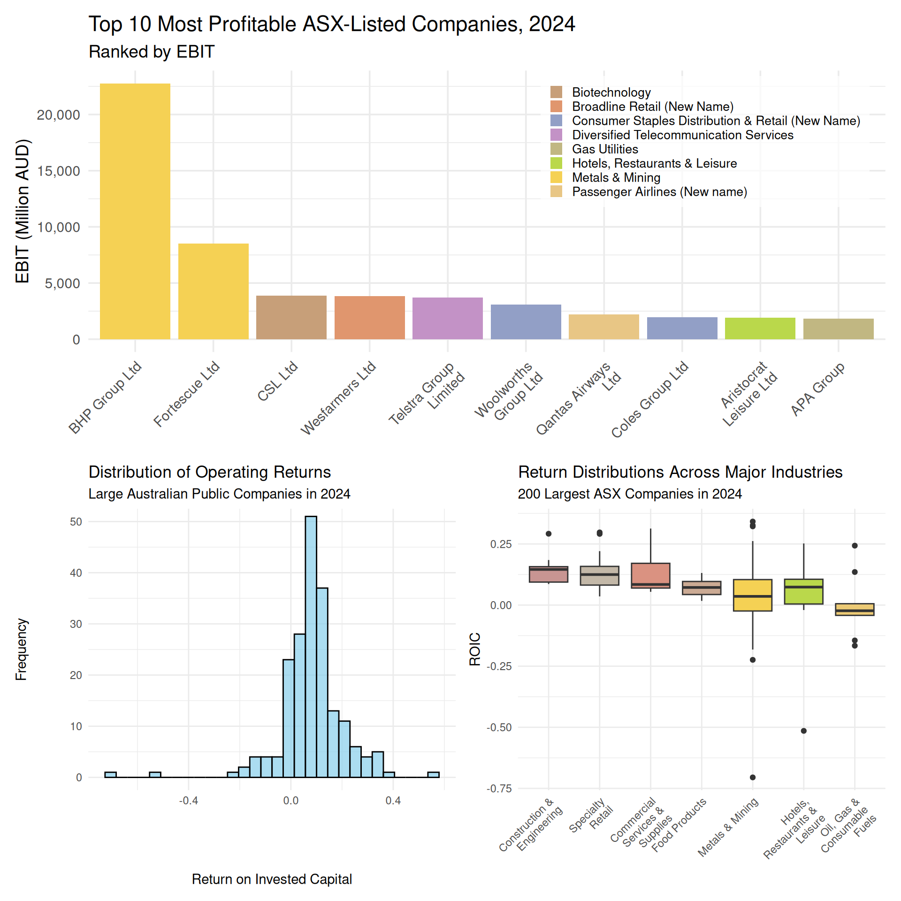
5.2 The Game Plan: What we’re aiming for
Recall our workflow:
- Define the Business Question(s) & Plan Outputs
- Acquire and Prepare Data
- Explore and Visualize Patterns
- Analyze and Interpret Findings
- Communicate Insights and Recommendations
Sketch of the plan:
Let’s get started!
5.3 Loading and understanding the data
R packages for today
Much of this week’s material will involve our using the dplyr package, which is one of the core packages in the tidyverse (one nice feature of dplyr is that it behaves nicely with ggplot, tidyr, stringr, and other data wrangling and visualization packages). The dpylr package is designed specifically for data wrangling. We will use dplyr’s core manipulation functions-filter(), select(), arrange(), mutate(), summarise(), and group_by()-to clean our data frames and make them more readable.
And so to begin, we need to load the packages that we will use for this chapter.
# Load the tidyverse for data manipulation and visualisation
library(tidyverse)
# Load scales for axis formatting and transformations
library(scales)
# Load ggokabeito for a colour-blind-friendly palette (available if you choose to use it)
library(ggokabeito)
# Load ggthemes for additional polished ggplot themes
library(ggthemes)
# Load patchwork to combine multiple ggplots into one figure
library(patchwork)
# Load stringr for consistent string manipulation helpers
library(stringr)
# Load RColorBrewer for qualitative and sequential colour palettes
library(RColorBrewer)
What is
stringr?
You may notice that we load many of the packages that you used for data visualization in last week’s lecture and tutorial. While the focus of this week’s material is data wrangling, we will do so with a clear goal toward producing insightful plots. You may also notice an unfamiliar package, stringr. This package is a useful tool for working with strings (i.e., text data). It provides a set of functions that simplify common string manipulation tasks, some of which we will use in this week’s lecture and tutorial to create labels and titles for our plots from the text data in our dataframes.
Loading the ASX financial statements data
We now import the financial statements data set, which covers the 200-largest ASX-listed firms in 2024. The data is from Yahoo Finance, a public website that collects and disseminates information that it gathers from firms’ audited financial statements (i.e., annual reports) and capital markets (i.e., stock prices and volumes).
# Read in the 2024 ASX 200 data set
asx_200_2024 <- read_csv("data/asx_200_2024.csv")So, how is this data frame structured and what information does it contain?
asx_200_2024 # A tibble: 200 × 30
gvkey curcd fyear fyr datadate at capx shareequity dlc dltt dvp
<chr> <chr> <dbl> <dbl> <chr> <dbl> <dbl> <dbl> <dbl> <dbl> <dbl>
1 013312 USD 2024 6 6/30/20… 102362 9273 49120 2084 18634 NA
2 210216 AUD 2024 6 6/30/20… 45550 2288 17352 4228 12740 NA
3 223003 USD 2024 6 6/30/20… 38022 849 19401 944 11239 NA
4 212650 AUD 2024 6 6/30/20… 36694 104 11678 1590 18596 NA
5 100894 AUD 2024 6 6/30/20… 33936 2548 5570 2311 14411 NA
6 212427 USD 2024 6 6/30/20… 30060 2834 19531 192 5208 NA
7 101601 AUD 2024 6 6/30/20… 27309 923 8585 1165 10113 NA
8 226744 AUD 2024 6 6/30/20… 20894 754. 5275. 606. 10332. NA
9 220244 AUD 2024 6 6/30/20… 20564 2761 294 600 5991 NA
10 017525 AUD 2024 6 6/30/20… 20454 608 9489 68 3310 NA
# ℹ 190 more rows
# ℹ 19 more variables: ebit <dbl>, netprofit <dbl>, pstk <dbl>, sale <dbl>,
# epsexcon <dbl>, nicon <dbl>, conm <chr>, fic <chr>, conml <chr>,
# ggroup <dbl>, gind <dbl>, gsector <dbl>, gsubind <dbl>, sector <chr>,
# indgroup <chr>, industry <chr>, subind <chr>, debt <dbl>,
# invested_capital <dbl>Our data frame is a tibble that has 200 rows (one for each of the 200-largest companies on the ASX in 2024) and 30 columns (each of which is a variable or identifier that contains information on that row’s company). Most of these columns contain financial statement information that describe the companies’ operations (i.e., the core economic activities that companies undertake to generate profits) and capital structure (i.e., how companies use debt and equity to fund their operations). Because our data frame is wide, many of these columns are ‘cut off’ and so cannot be viewed in our simple HTML table.
Let’s view our tibble another way to shed light on each column and its contents:
glimpse(asx_200_2024)Rows: 200
Columns: 30
$ gvkey <chr> "013312", "210216", "223003", "212650", "100894", "21…
$ curcd <chr> "USD", "AUD", "USD", "AUD", "AUD", "USD", "AUD", "AUD…
$ fyear <dbl> 2024, 2024, 2024, 2024, 2024, 2024, 2024, 2024, 2024,…
$ fyr <dbl> 6, 6, 6, 6, 6, 6, 6, 6, 6, 6, 6, 6, 6, 6, 6, 6, 6, 6,…
$ datadate <chr> "6/30/2024", "6/30/2024", "6/30/2024", "6/30/2024", "…
$ at <dbl> 102362.00, 45550.00, 38022.00, 36694.00, 33936.00, 30…
$ capx <dbl> 9273.000, 2288.000, 849.000, 104.000, 2548.000, 2834.…
$ shareequity <dbl> 49120.000, 17352.000, 19401.000, 11678.000, 5570.000,…
$ dlc <dbl> 2084.000, 4228.000, 944.000, 1590.000, 2311.000, 192.…
$ dltt <dbl> 18634.000, 12740.000, 11239.000, 18596.000, 14411.000…
$ dvp <dbl> NA, NA, NA, NA, NA, NA, NA, NA, NA, NA, NA, NA, NA, N…
$ ebit <dbl> 22771.000, 3712.000, 3896.000, 1132.000, 3100.000, 85…
$ netprofit <dbl> 9601.000, 1788.000, 2714.000, 376.000, 117.000, 5664.…
$ pstk <dbl> 0.0, 0.0, 0.0, 0.0, 0.0, 0.0, 0.0, 252.2, 0.0, 0.0, 0…
$ sale <dbl> 55658.000, 22928.000, 14690.000, 4119.000, 67922.000,…
$ epsexcon <dbl> 1.5582, 0.1405, 5.4699, 0.1055, 0.0885, 1.8476, 2.256…
$ nicon <dbl> 7897.000, 1622.000, 2642.000, 326.000, 108.000, 5683.…
$ conm <chr> "BHP GROUP LTD", "TELSTRA GROUP LIMITED", "CSL LTD", …
$ fic <chr> "AUS", "AUS", "AUS", "AUS", "AUS", "AUS", "AUS", "AUS…
$ conml <chr> "BHP Group Ltd", "Telstra Group Limited", "CSL Ltd", …
$ ggroup <dbl> 1510, 5010, 3520, 2030, 3010, 1510, 2550, 3510, 2030,…
$ gind <dbl> 151040, 501010, 352010, 203050, 301010, 151040, 25503…
$ gsector <dbl> 15, 50, 35, 20, 30, 15, 25, 35, 20, 55, 30, 55, 15, 5…
$ gsubind <dbl> 15104020, 50101020, 35201010, 20305020, 30101030, 151…
$ sector <chr> "Materials", "Communication Services", "Health Care",…
$ indgroup <chr> "Materials", "Telecommunication Services", "Pharmaceu…
$ industry <chr> "Metals & Mining", "Diversified Telecommunication Ser…
$ subind <chr> "Diversified Metals & Mining", "Integrated Telecommun…
$ debt <dbl> 20718.000, 16968.000, 12183.000, 20186.000, 16722.000…
$ invested_capital <dbl> 69838.00, 34320.00, 31584.00, 31864.00, 22292.00, 249…Given this week’s topic, much of our analysis will focus on ebit. This variable is our profit measure, Earnings Before Interest and Taxes.
Definition: EBIT
In accounting and finance, we refer to profit as the ‘bottom line’ because it is the money left over after the business has covered its expenses and which in turn can then be paid out to the business’ owners (i.e., shareholders). EBIT tells us how much profit a company makes from its core business activities before it pays interest (on debt) and taxes.
\[ EBIT = \text{Revenue} - \text{Cost of Goods Sold} - \text{Operating Expenses} \]
Because EBIT can be used to compare companies without worrying about differences in tax strategies or capital structure, investors and analysts commonly use EBIT for valuation purposes (without getting into the details of discounted cash flow models, investors pay more for companies that they expect will produce greater profits in the future, and current profits are often a good, but not perfect, indicator of future profits).
Putting EBIT as a measure of firm profits to one side, we will define and interpret the other financial variables in our data frame as they arise during the data wrangling process.
5.4 Using transformations to wrangle data
For this week’s material, you will learn to use the primary dplyr verbs to manipulate our data frame in some basic, but useful ways. dpylr verbs operate on data frames in one of four ways: on rows, on columns, on groups, and on tables. We can use pipes (|>) to combine multiple dplyr verbs, and so perform more complex data manipulations.
Operating on rows with filter() and arrange()
You only need to skim the business section of any broadsheet newspaper to observe that the mining sector dominates the Australian economy.
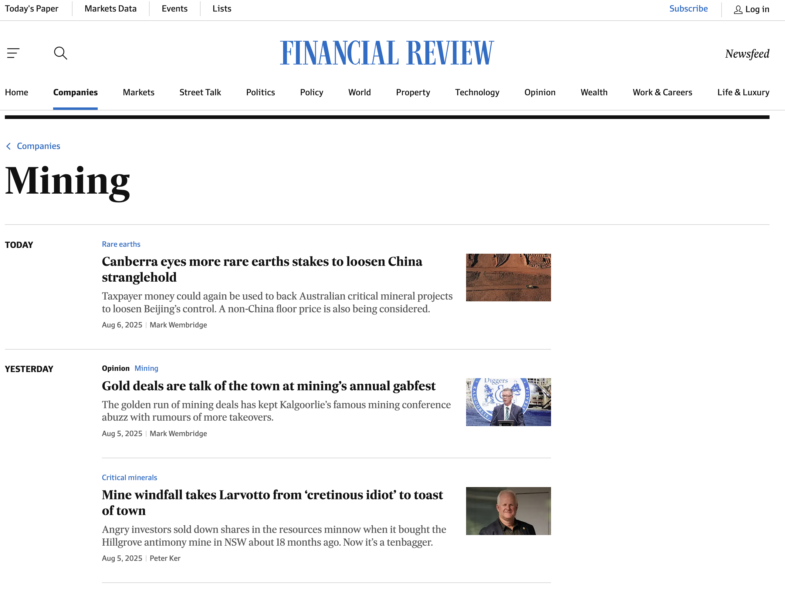
And so, to begin our analysis of firm profits, it makes sense to start off by comparing the operating performance of mining companies and non-mining companies for our sample of the 200-largest ASX-listed firms. To do so, we will make use of two dplyr verbs that operate on rows: filter() and arrange().
What do
filter() and arrange() ‘do’?
filter() allows you to keep rows based on the values of the columns, and so changes which rows are present without changing their order. In contrast, arrange() changes the order of rows without changing which are present. Neither function affects the columns in the data frame.
We can use filter() to identify and separately store the mining companies that appear in our data frame:
# Keep only the 'Metals & Mining' firms from the ASX 200 dataset for 2024
big_mining_2024 <- asx_200_2024 |>
filter(industry == "Metals & Mining")We use arrange() to list these mining companies in descending order so that those mining companies that have the largest profits appear first and those that have the the largest losses (i.e., negative profits) appear last:
# Sort Metals & Mining firms in descending order of EBIT (highest profit first)
big_mining_2024 <- big_mining_2024 |>
arrange(desc(ebit))We can now easily show the 10 mining companies from the ASX that produced the largest profits using a simple table:
# Keep only the top 10 most profitable mining firms (by EBIT)
t10_mining_profits <- big_mining_2024 |>
slice_head(n = 10)
# Display the resulting data set
t10_mining_profits# A tibble: 10 × 30
gvkey curcd fyear fyr datadate at capx shareequity dlc dltt dvp
<chr> <chr> <dbl> <dbl> <chr> <dbl> <dbl> <dbl> <dbl> <dbl> <dbl>
1 0133… USD 2024 6 6/30/20… 1.02e5 9273 49120 2.08e3 1.86e4 NA
2 2124… USD 2024 6 6/30/20… 3.01e4 2834 19531 1.92e2 5.21e3 NA
3 2522… AUD 2024 6 6/30/20… 1.57e4 963. 11286. 1.91e2 5.31e2 NA
4 2596… AUD 2024 6 6/30/20… 1.31e4 1440 8791. 1.52e2 1.19e3 NA
5 2533… AUD 2024 6 6/30/20… 8.82e3 918. 4142. 1.27e2 1.89e3 NA
6 2713… USD 2024 6 6/30/20… 1.99e3 121. 1780. 1.70e0 1.52e0 NA
7 2869… AUD 2024 6 6/30/20… 4.31e3 810. 3244. 1.36e2 4.20e2 NA
8 2051… AUD 2024 6 6/30/20… 1.22e4 4133 3584 2.55e2 5.08e3 NA
9 2564… AUD 2024 6 6/30/20… 1.59e3 123. 1329. 9.08e0 1.39e0 NA
10 2108… AUD 2024 6 6/30/20… 3.36e3 335. 1788. 1.71e1 9.11e2 NA
# ℹ 19 more variables: ebit <dbl>, netprofit <dbl>, pstk <dbl>, sale <dbl>,
# epsexcon <dbl>, nicon <dbl>, conm <chr>, fic <chr>, conml <chr>,
# ggroup <dbl>, gind <dbl>, gsector <dbl>, gsubind <dbl>, sector <chr>,
# indgroup <chr>, industry <chr>, subind <chr>, debt <dbl>,
# invested_capital <dbl>The above doesn’t quite work how we want it to because it cuts off the company’s EBIT and name (to view a wide data frame such as ours we need to open it in the dedicated viewer using View()).
As an alternative, Figure 5.1 concisely and effectively conveys which Australian mining firms have the largest profits (much of the code below will look familiar from last week’s module on using ggplot for data visualization). Before producing this plot, we first want to fix our color scheme so that across plots the same industry is always the same color (even though for the time being we are only looking at one industry-i.e., mining-and so only need one color at this stage, later we will look at other industries, and so need to map different industries to different colors).
# Extract all unique industries and sort them alphabetically
industry_levels <- asx_200_2024$industry |>
unique() |>
sort()
# Assign a colour to each industry using the Set2 palette
industry_colors <- setNames(
# Generate as many colours as there are industries
colorRampPalette(RColorBrewer::brewer.pal(8, "Set2"))(length(industry_levels)),
# Name each colour with the corresponding industry
industry_levels
)# Reorder company names so bars appear in descending EBIT order
t10_mining_profits <- t10_mining_profits |>
mutate(conml = reorder(conml, -ebit))
# Create a bar chart showing EBIT by company
t10_mining_profits |>
ggplot(aes(x = conml, y = ebit, fill = industry)) +
# Draw bars with heights equal to EBIT values
geom_bar(stat = "identity") +
# Use the custom Set2-based industry palette
scale_fill_manual(values = industry_colors) +
# Add a y-axis label with units in millions
labs(
x = NULL,
y = "EBIT (Million AUD)",
title = "ASX-Listed Mining Companies",
subtitle = "Top 10 by EBIT in 2024"
) +
# Format y-axis numbers with comma separators
scale_y_continuous(labels = scales::comma) +
# Apply a clean minimal theme with larger base text size
theme_minimal(base_size = 14) +
# Rotate x-axis labels for readability
theme(axis.text.x = element_text(angle = 45, hjust = 1))
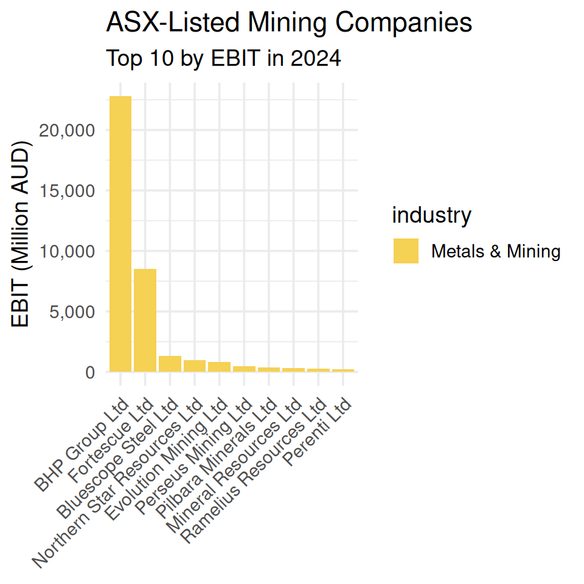
Discussion: BHP - Australia’s mining giant
Headquartered in Melbourne, BHP is one of the world’s largest diversified mining companies. Founded in 1885 as Broken Hill Proprietary Company Limited, its name reflects its origins in the Broken Hill mining region. It produces a wide range of commodities including iron ore, copper, coal, and petroleum. BHP is known for its scale, operational efficiency, and global footprint, competing closely with other mining giants like Rio Tinto and Vale. The company plays a crucial role in supplying raw materials for industries worldwide and is a key player in the global mining sector.
10 min
Modify the code above to produce an equivalent plot but for the non-mining companies in our data set. To do so, take the following steps:
Use
filter()to create a new data frame that contains only the non-mining companies in our data set (!=means ‘does not’ equal in a conditional statement). Usearrange()to sort these companies in descending order of EBIT. Keep the first ten observations in a new data frame namedt10_other_profits.Use
ggplot()to create a bar chart that shows the EBIT of the ten non-mining companies with the largest profits.
Solution
Step 1:
# Create a data frame of the top 10 most profitable non-mining companies
t10_other_profits <- asx_200_2024 |>
# Exclude Metals & Mining companies
filter(industry != "Metals & Mining") |>
# Sort by EBIT in descending order
arrange(desc(ebit)) |>
# Keep only the top 10 rows
slice_head(n = 10)Step 2:
# Reorder company names so bars appear in descending EBIT order
t10_other_profits <- t10_other_profits |>
mutate(conml = reorder(conml, -ebit))
# Create a bar chart of the ten most profitable non-mining companies
t10_other_profits |>
ggplot(aes(x = conml, y = ebit, fill = industry)) +
# Draw bars with heights equal to EBIT values
geom_bar(stat = "identity") +
# Use the Set2-based industry palette
scale_fill_manual(values = industry_colors) +
# Add labels in clear, title case
labs(
x = NULL,
y = "EBIT (Million AUD)",
title = "ASX-Listed Non-Mining Companies",
subtitle = "Top 10 by EBIT in 2024"
) +
# Format y-axis numbers with comma separators
scale_y_continuous(labels = scales::comma) +
# Apply a clean minimal theme with larger text
theme_minimal(base_size = 14) +
# Rotate x-axis labels and style legend
theme(
axis.text.x = element_text(angle = 45, hjust = 1),
legend.position = c(0.98, 0.98),
legend.justification = c("right", "top"),
legend.title = element_blank(),
legend.text = element_text(size = 10),
legend.background = element_rect(fill = scales::alpha("white", 0.7), color = NA),
legend.key.size = grid::unit(0.4, "cm"),
legend.spacing.y = grid::unit(0.1, "cm")
)
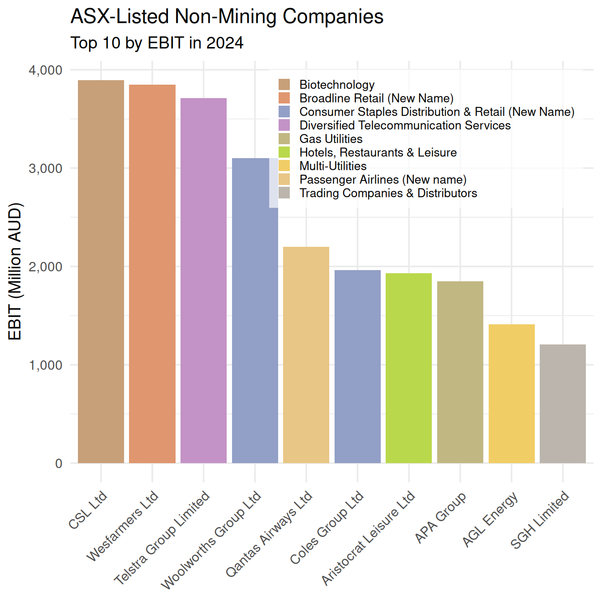
Comparing Figure 5.2 to Figure 5.1 reveals that mining companies dominate the Australian economy: the profits of the mining companies with the largest profits are much larger than those of the non-mining companies with the largest profits. However, to get the complete picture in a single plot, let’s take a step back, look at our full sample again, and plot the ten firms across all industries that have the largest profits in 2024:
# Select the top 10 companies by EBIT
t10_all_profits <- asx_200_2024 |>
arrange(desc(ebit)) |>
slice_head(n = 10)
# Reorder company names so bars appear in descending EBIT order
t10_all_profits <- t10_all_profits |>
mutate(conml = reorder(conml, -ebit))
# Create a bar chart of the top 10 most profitable companies
bar_plot <- t10_all_profits |>
ggplot(aes(x = conml, y = ebit, fill = industry)) +
# Draw bars with heights equal to EBIT values
geom_bar(stat = "identity") +
# Use clear, title-cased labels; no x-axis label
labs(
x = NULL,
y = "EBIT (Million AUD)",
title = "Top 10 Most Profitable ASX-Listed Companies, 2024",
subtitle = "Ranked by EBIT"
) +
# Format y-axis numbers with comma separators
scale_y_continuous(labels = scales::comma) +
# Apply the provided industry palette
scale_fill_manual(values = industry_colors) +
# Use a clean minimal theme with slightly larger text
theme_minimal(base_size = 14) +
# Rotate x-axis labels and style legend
theme(
axis.text.x = element_text(angle = 45, hjust = 1),
legend.position = c(0.98, 0.98),
legend.justification = c("right", "top"),
legend.title = element_blank(),
legend.text = element_text(size = 10),
legend.background = element_rect(fill = scales::alpha("white", 0.7), color = NA),
legend.key.size = grid::unit(0.4, "cm"),
legend.spacing.y = grid::unit(0.1, "cm")
)
# Display the plot
bar_plot
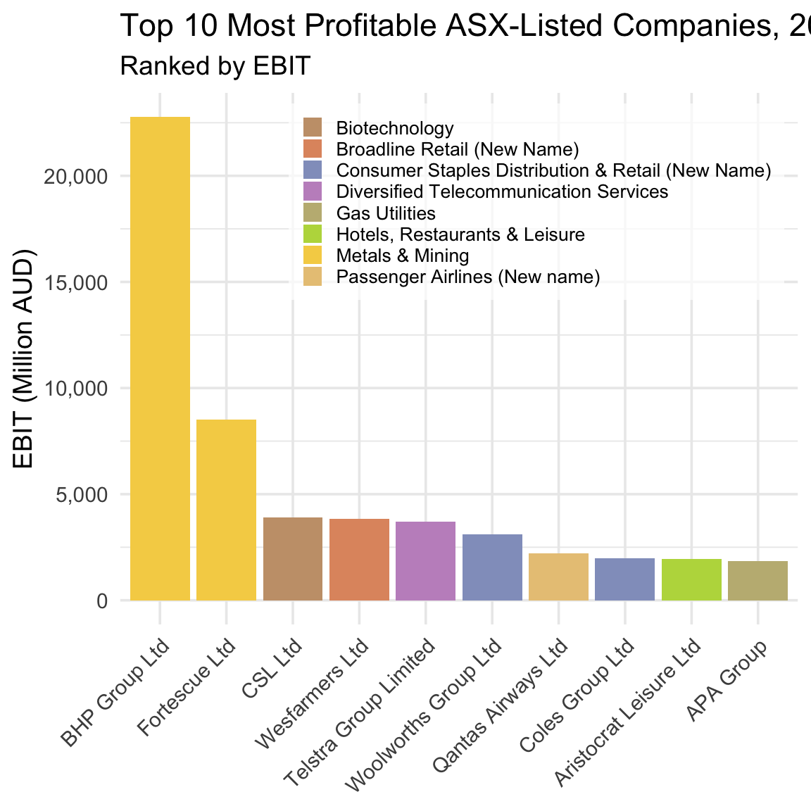
Figure 5.3 shows that although non-mining companies outnumber mining companies in our top ten (two to eight), the combined profits of the latter are larger than the combined profits of the former. And so, at least on the basis of profits, mining companies really do dominate the Australian economy.
10 min
Modify the code above to produce an equivalent plot but for the ten companies that produced the worst losses in 2024. To do so, take the following steps:
Use
arrange()to place in ascending order by profits all companies in our data frame. Keep the first ten observations in a new data frame namedt10_all_losses.Use
ggplot()to create a bar plot that shows the EBIT of the ten companies with the worst losses. Usefill = industryto color firms by their industry.
Solution
Step 1:
# Select the 10 companies with the largest losses (lowest EBIT values)
t10_all_losses <- asx_200_2024 |>
# Sort by EBIT in ascending order so loss-makers appear first
arrange(ebit) |>
# Keep only the first 10 rows
slice_head(n = 10)Step 2:
# Reorder company names so bars appear from largest to smallest loss
t10_all_losses <- t10_all_losses |>
mutate(conml = reorder(conml, ebit))
# Create a bar chart of the 10 companies with the largest losses
t10_all_losses |>
ggplot(aes(x = conml, y = ebit, fill = industry)) +
# Draw bars with heights equal to EBIT values
geom_bar(stat = "identity") +
# Add labels in clear, title case
labs(
x = NULL,
y = "EBIT (Million AUD)",
title = "Top 10 ASX-Listed Companies by Losses",
subtitle = "Largest Loss-Makers in 2024"
) +
# Format y-axis numbers with comma separators
scale_y_continuous(labels = scales::comma) +
# Apply the provided industry palette
scale_fill_manual(values = industry_colors) +
# Use a clean minimal theme with larger base font
theme_minimal(base_size = 14) +
# Rotate x-axis labels and position legend bottom-right
theme(
axis.text.x = element_text(angle = 45, hjust = 1),
legend.position = c(0.98, 0.02),
legend.justification = c("right", "bottom"),
legend.title = element_blank(),
legend.text = element_text(size = 10),
legend.background = element_rect(fill = scales::alpha("white", 0.7), color = NA),
legend.key.size = grid::unit(0.4, "cm"),
legend.spacing.y = grid::unit(0.1, "cm")
)
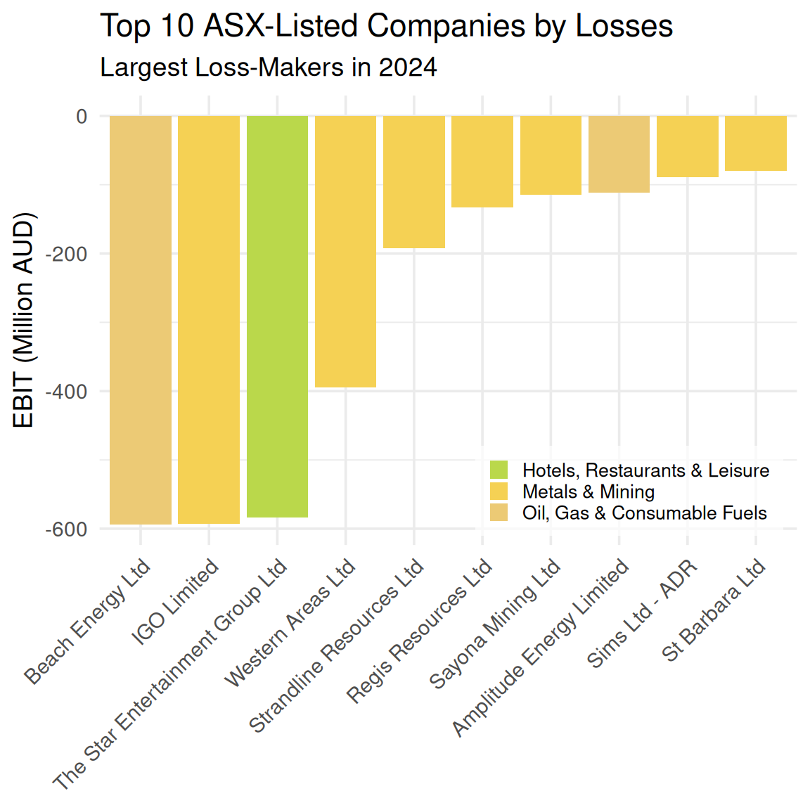
Interestingly, seven of the ten companies that produced the worst losses in 2024 are mining companies. Taken together, Figure 5.3 and Figure 5.4 reveal a key feature of the Australian economy: Mining is a boom-or-bust business.
Discussion: Mining and the ‘Wild West’
Mining has long been a cornerstone of the Australian economy, especially in the vast and remote regions of Western Australia. This frontier-style industry is marked by bold ventures, high risks, and the promise of enormous rewards — a dynamic that continues to shape the business landscape today.
Banks and other small lenders typically lack both the risk appetite and the capital base needed to fund mining ventures. As a result, mining companies must turn to the stock market to raise the substantial funds required for land acquisition and leases, and plant, property, and heavy equipment — none of which come cheaply. Consequently, mining companies dominate the ASX, both in terms of listings (as we will show later) and in representing the firms that generate the largest profits and the largest losses.
This extreme variation in EBIT reflects the high operating risk inherent in mining — it is, quite literally, a boom-or-bust business. The volatility arises from several sources: the speculative nature of prospecting (it’s difficult to predict where and how much resource will be found), the cyclical fluctuations in global commodity prices, and the immense costs associated with exploration and extraction.
Operating on columns with mutate() and select()
We need to keep in mind that profit is a dollar-dominated measure of operating performance, and so it may be the case that those firms that produce the largest profits or the largest losses are simply the largest firms in our sample (i.e., undertake the most economic activity and so by function of their size make or lose lots of money). This distinction matters because investors ultimately want to allocate their capital to companies that generate the best returns (i.e., the most profit per dollar of investment), which may not necessarily be the firms that produce the most profit in absolute terms.
Let’s observe how returns vary within the Australian economy across industries, and within industries across firms. For this analysis, we must first calculate each company’s return on investment in our sample and then focus in on this measure of operating performance. To do so, we will make use of two dplyr verbs that operate on columns: mutate() and select().
What do
mutate() and select() ‘do’?
mutate() allows you to add new columns that are created from values in existing columns, and so ‘widens’ your data frame. In contrast, select() allows you to isolate specific columns and drop others, and so ‘narrows’ your data frame. Neither function affects the rows in the data frame.
We will use mutate() to create our measure of firm profitability, Return on Invested Capital (ROIC):
# Calculate Return on Invested Capital (ROIC) for firms with valid invested capital
returns <- asx_200_2024 |>
# Exclude firms with zero or negative invested capital
filter(invested_capital > 0) |>
# Create new ROIC variable: EBIT divided by invested capital
mutate(roic = ebit / invested_capital)
Definition: Profit vs Profitability - Why ROIC?
ROIC captures how effectively a company is using the funds invested by its shareholders and debt holders to generate profits. We calculate ROIC as follows, where Invested Capital is defined as debt plus equity as per the book values in the firm’s balance sheet: \[ ROIC = \frac{EBIT}{\text{Invested Capital}} \] Consider Company A, which receives $10 in investment and produces $100 in profit. Consider Company B, which receives $100 in investment and produces $101 in profit. While company B produces a larger profit, Company A is a much better investment because it generates much more profit per dollar of investment - i.e., it provides investors with a much higher return on their capital. ROIC makes this clear: Company A’s ROIC is 10, while Company B’s ROIC is 1.01.
You should notice that in the above chunk of code before creating our ROIC variable and assigning this to our returns data frame we drop observations from our sample where invested capital is missing or equal to zero. We do so to avoid creating a variable where we may for some observations need to divide by zero (which of course cannot be done).
So, which ten Australian companies produced the best operating returns in 2024?
# Return the 10 companies with the highest ROIC
returns |>
# Sort in descending order of ROIC
arrange(desc(roic)) |>
# Keep the top 10 rows
slice_head(n = 10)# A tibble: 10 × 31
gvkey curcd fyear fyr datadate at capx shareequity dlc dltt
<chr> <chr> <dbl> <dbl> <chr> <dbl> <dbl> <dbl> <dbl> <dbl>
1 242679 AUD 2024 6 6/30/2024 866. 0.607 74.9 3.99e0 1.66e1
2 248015 AUD 2024 6 6/30/2024 2655 4.2 1579. 8.8 e0 2.72e2
3 212427 USD 2024 6 6/30/2024 30060 2834 19531 1.92e2 5.21e3
4 241419 AUD 2024 9 9/30/2024 757. 6.32 379. 7.10e0 5.26e1
5 013312 USD 2024 6 6/30/2024 102362 9273 49120 2.08e3 1.86e4
6 289353 AUD 2024 6 6/30/2024 624. 65.6 309. 6.03e1 2.38e1
7 220244 AUD 2024 6 6/30/2024 20564 2761 294 6 e2 5.99e3
8 333913 AUD 2024 6 6/30/2024 338. 40.7 160. 1.88e1 5.09e1
9 318878 AUD 2024 6 6/30/2024 533. 38.5 80.3 5.84e1 3.01e2
10 364417 AUD 2024 6 6/30/2024 362. 3.92 82.9 3.73e1 6.91e1
# ℹ 21 more variables: dvp <dbl>, ebit <dbl>, netprofit <dbl>, pstk <dbl>,
# sale <dbl>, epsexcon <dbl>, nicon <dbl>, conm <chr>, fic <chr>,
# conml <chr>, ggroup <dbl>, gind <dbl>, gsector <dbl>, gsubind <dbl>,
# sector <chr>, indgroup <chr>, industry <chr>, subind <chr>, debt <dbl>,
# invested_capital <dbl>, roic <dbl>As we discussed briefly already, tables such as the one above are too wide for our purposes. mutate() adds columns to the right-hand side of your data frame, where information is often cutoff from view in dynamic documents such as this one. Given that our focus is on identifying the companies in our top ten and these companies’ returns, we can use select() to ‘narrow’ our data frame, and so produce a table that only reports the columns that we currently interested in.
# Return the 10 companies with the highest ROIC
returns |>
# Sort in descending order of ROIC
arrange(desc(roic)) |>
# Keep the top 10 rows
slice_head(n = 10) |>
# Select only columns relevant to operating returns in 2024
select(fyear, conml, roic, ebit, invested_capital)# A tibble: 10 × 5
fyear conml roic ebit invested_capital
<dbl> <chr> <dbl> <dbl> <dbl>
1 2024 Data3 Ltd 0.558 53.2 95.5
2 2024 REA Group Ltd 0.382 711. 1860
3 2024 Fortescue Ltd 0.342 8520 24931
4 2024 Technology One Ltd 0.334 147. 439.
5 2024 BHP Group Ltd 0.326 22771 69838
6 2024 Capricorn Metals Ltd 0.322 127. 393.
7 2024 Qantas Airways Ltd 0.319 2198 6885
8 2024 Mader Group Ltd 0.313 72.0 230.
9 2024 Lovisa Holdings Ltd 0.297 131. 439.
10 2024 Symal Group Limited 0.292 55.3 189. This table is much better as it focuses on reporting the information that is most relevant to our current research question. You may notice two interesting takeaways from this table.
- While Data3’s profit is relatively small as a dollar amount, it generates this profit using a very small amount of invested capital such that the company produces the best return for all ASX-listed firms in our sample.
- BHP’s profit is very large as a dollar amount, but it generates this profit using a very large amount of invested capital. As such, BHP produces a strong return but not the strongest.
Comparing these two companies makes clear the distinction between measures of operating performance that capture profit vs profitability.
5 min
Question:
What features of Data#3’s business model and the broader economics of the IT and cloud services industry help explain its high ROIC?
In your answer, consider:
- How much capital (land, plant, equipment) a company like Data#3 needs to operate
- The role of intangible assets, such as software, service contracts, and technical know-how
- How cloud-based business models affect scalability and margins
- Why return on capital might be high even if margins are not extreme
Write a few sentences explaining how these factors contribute to Data#3’s strong performance.
Solution
Data#3’s high ROIC reflects the economics of the IT and cloud services industry. Unlike mining or manufacturing firms, Data#3 does not need to invest heavily in physical assets—its operations rely on skilled labor, software systems, and cloud infrastructure managed by third parties. This means low invested capital.
At the same time, cloud-based services and IT solutions can scale efficiently, allowing the firm to serve many clients without a matching increase in costs. As a result, Data#3 generates high earnings from a relatively small capital base, which drives up ROIC even if profit margins are moderate.
10 min
Modify the code above to produce an equivalent table but for the ten companies that achieved the worst returns in 2024. To do so, take the following steps:
Use
arrange()to place in ascending order by returns all companies in our data frame. Usehead()to keep the first ten observations in a new data frame namedb10_returns.Use
select()to extract and store from this new, shorter data frame the following columns:fyear,conml,roic,ebit, andinvested_capital.
Solution
Step 1:
# Select the 10 companies with the lowest ROIC values
b10_returns <- returns |>
# Sort in ascending order of ROIC (worst performers first)
arrange(roic) |>
# Keep only the first 10 rows
slice_head(n = 10)Step 2:
# Show the 10 companies with the lowest ROIC, keeping only relevant columns
b10_returns |>
select(fyear, conml, roic, ebit, invested_capital)# A tibble: 10 × 5
fyear conml roic ebit invested_capital
<dbl> <chr> <dbl> <dbl> <dbl>
1 2024 Strandline Resources Ltd -0.705 -193. 273.
2 2024 The Star Entertainment Group Ltd -0.515 -584. 1135.
3 2024 St Barbara Ltd -0.224 -80.0 357.
4 2024 IGO Limited -0.182 -593. 3258
5 2024 Amplitude Energy Limited -0.166 -112. 673.
6 2024 Beach Energy Ltd -0.145 -594 4107.
7 2024 Sayona Mining Ltd -0.139 -115. 826.
8 2024 Pantoro Ltd -0.130 -60.9 469.
9 2024 Western Areas Ltd -0.121 -394. 3258
10 2024 Mesoblast Ltd -0.0967 -58.0 599.
Discussion: Star Entertainment
One name from this list-Star Entertainment Group-should immediately jump out if you regularly read the Australian Financial Review. Much has been written in the Australian business press about the poor operating performance of Star Entertainment, a gambling and entertainment company that operates several high-profile casinos.
The Star Entertainment Group is one of Australia’s largest casino operators, running major venues in Sydney, Brisbane, and the Gold Coast. For years, it relied heavily on high-roller gambling and large-scale property developments to drive profits. The company’s fortunes have deteriorated sharply over the past few years, initially due to the pandemic’s hit to tourism, then more severely from a series of damaging regulatory inquiries into money laundering and governance failures. These have resulted in costly compliance measures, reduced high-roller business, and reputational damage.
In 2025, Star Entertainment remains in a precarious position — it has bought some time through emergency funding, but without new asset sales, debt relief, or a regulatory settlement, the risk of collapse is still on the table.
While short, narrow tables such as the above are useful for identify and describing limited features of a small subset of a longer, wider data frame, often we want to more fully describe and summarize these longer, wider data frames, and so we are better off relying on visualizations and/or descriptive statistics such as measures of central tendency and dispersion.
For example, what return did the typical large Australian public company produce in 2024? How commonly did firms produce returns in excess of 40%? And returns worse than -20%? To illustrate the benefits of visualization for generating insight, we can use a histogram to examine the distribution of firm profitability for all firms in our sample (i.e., the largest 200 companies on the ASX in 2024) and so answer these questions:
# Create a histogram of ROIC across firms
histogram <- returns |>
ggplot(aes(x = roic)) +
# Draw histogram with 30 bins, semi-transparent blue fill, and black border
geom_histogram(fill = "skyblue", color = "black", alpha = 0.7, bins = 30) +
# Add clear labels and title case
labs(
x = "Return on Invested Capital",
y = "Frequency",
title = "Distribution of Operating Returns",
subtitle = "Large Australian Public Companies in 2024"
) +
# Apply a clean minimal theme
theme_minimal() +
# Limit y-axis range to 0–50 without dropping data
coord_cartesian(ylim = c(0, 50))
# Display the histogram
histogram
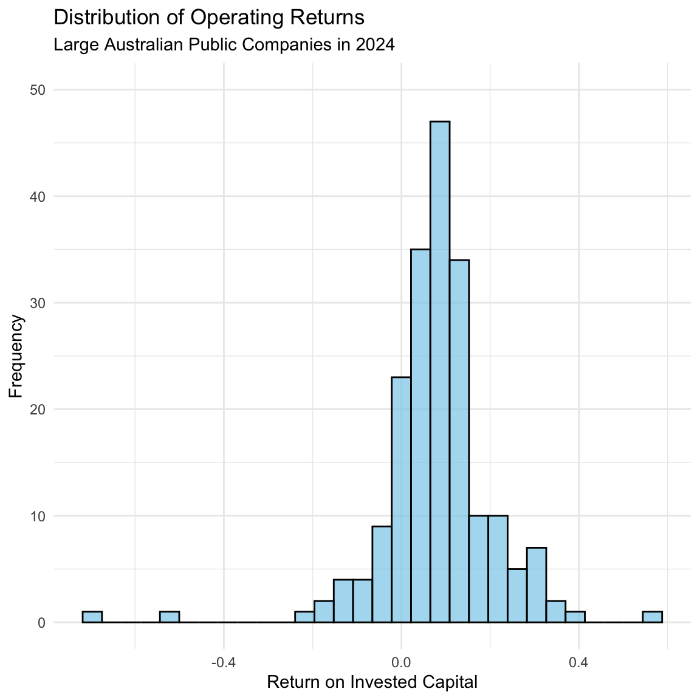
Figure 5.5 reveals several important insights. First, the typical large Australian public company in 2024 achieved returns for investors of approximately 10%. Second, the vast majority of large Australian public companies in 2024 achieved returns of between 0-15%. Third, very few (< 4) large Australian public companies in 2024 achieved returns worse than -20%, and only one large Australian companies achieved returns better than 40%.
Operating on groups with group_by() and summarise()
Earlier, we said that mining companies are subject to greater operating risk than firms in other industries (mining is highly speculative and prospectors cannot perfectly predict sites that contain resources; extracting those resources can be very challenging and costly, and commodity prices are very volatile). A key insight in finance is that investors in order to take on greater risk expect to be compensated with higher returns. And so, we should observe that mining companies returns, while more dispersed, are on average higher than non-mining companies returns, which are less dispersed.
To establish whether this is the case, we need to examine how returns vary across industries for our sample of large Australian public companies. To do so, we will make use of two dplyr functions that operate on groups within our data frame: group_by() and summarize().
What do
group_by() and summarize() ‘do’?
group_by() divides our data frame into groups on which we can then perform subsequent operations. One such operation is summarize(), which reduces the data frame to have a single row for each group, where each row contains summary statistics for that group. This is useful for aggregating data and calculating statistics such as means, medians, or counts. Another useful summary is n(), which returns the number of rows in each group. These functions affect the rows and columns in a data frame - e.g., group_by() then summarize() ‘shortens’ and ‘narrows’.
Before examining how returns vary across industries, we should first get a sense of the composition of the largest 200 Australian public companies in 2024. Which industry is most represented in our sample? Which is least represented? Did a small number of industries make up most of the Australian stock market in 2024? To answer these questions, we use group_by() to group our data frame by industry, and then summarize to count the number of observations associated with each industry in this group:
returns |>
# Group firms by industry
group_by(industry) |>
# Count the number of observations in each industry
summarise(obs = n()) |>
# Sort industries from most to fewest observations
arrange(desc(obs))# A tibble: 45 × 2
industry obs
<chr> <int>
1 Metals & Mining 42
2 Specialty Retail 14
3 Construction & Engineering 11
4 Hotels, Restaurants & Leisure 11
5 Oil, Gas & Consumable Fuels 9
6 Commercial Services & Supplies 7
7 Food Products 7
8 Health Care Providers & Services 6
9 Trading Companies & Distributors 5
10 Broadline Retail (New Name) 4
# ℹ 35 more rowsThe above table shows that while we observe 45 distinct industries in our sample, seven industries account for more than half of the 200 largest Australian public companies (and mining alone accounts for almost one quarter of these companies). Given the importance of these seven ‘big’ industries to the Australian economy-Metals & Mining; Specialty Retail; Construction & Engineering; Hotels, Restaurants, & Leisure; Oil, Gas, & Consumable Fuels; Commercial Services & Supplies; and, Food Products-let’s focus on them for the remainder of our industry-level analyses.
We use filter() to isolate observations from this sub-set of industries, and then use group_by() to group our data frame by industry. After this, we then use summarize() to calculate each industry’s average returns and standard deviation of returns for our sub sample of firms drawn from the 200 largest Australian public companies in 2024:
# Define the set of 'big' industries to focus on
big_industries <- c(
"Metals & Mining",
"Specialty Retail",
"Construction & Engineering",
"Hotels, Restaurants & Leisure",
"Oil, Gas & Consumable Fuels",
"Commercial Services & Supplies",
"Food Products"
)
# Calculate mean and standard deviation of ROIC for the big industries
returns |>
# Keep only rows from the selected industries
filter(industry %in% big_industries) |>
# Group by industry
group_by(industry) |>
# Compute average and standard deviation of ROIC
summarise(
ave_roic = mean(roic, na.rm = TRUE),
sd_roic = sd(roic, na.rm = TRUE)
) |>
# Sort from highest to lowest average ROIC
arrange(desc(ave_roic))# A tibble: 7 × 3
industry ave_roic sd_roic
<chr> <dbl> <dbl>
1 Construction & Engineering 0.144 0.0597
2 Specialty Retail 0.140 0.0810
3 Commercial Services & Supplies 0.133 0.0950
4 Food Products 0.0714 0.0413
5 Metals & Mining 0.0357 0.177
6 Hotels, Restaurants & Leisure 0.0349 0.201
7 Oil, Gas & Consumable Fuels -0.00279 0.127 This table is useful, but we can use a box plot to provide a visualization that more richly describes how returns are distributed within industries, and how these distributions differ across industries.
What is a box plot?
A box plot is a statistical chart that summarizes the distribution of a numeric variable using five key values: the minimum, first quartile (Q1), median, third quartile (Q3), and maximum. The “box” shows the middle 50% of the data, with a line inside marking the median. The “whiskers” extend to the smallest and largest values within a set range, and points outside are plotted individually as outliers. Box plots are useful for quickly comparing distributions, spotting skewness, and identifying extreme values across different groups.
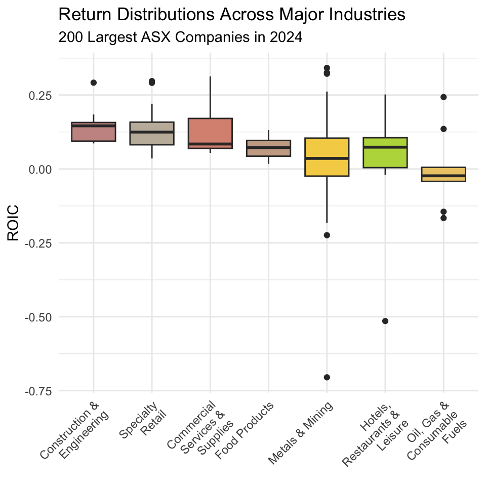
Hmm, this plot presents results that are only partially consistent with the story we have been telling ourselves so far. Returns in mining are very highly dispersed compared to other industries, but expected returns in mining are lower than those in many other industries. And so, it seems that while mining companies do face heightened operating risk, investors in mining companies do not appear to achieve returns commensurate with this level of risk.
In fact, if anything, the plot as a whole suggests an inverted relationship between expected returns and risk-i.e., those industries that produce the best returns on average also produce returns that are less dispersed. One reason for why this is the case is that in sectors like mining, high volatility in ROIC often stems from cyclical demand, volatile input prices, and the heavy fixed costs associated with capital-intensive operations. These factors amplify losses in bad years but place natural limits on upside in good years, pulling down the long-run average ROIC.
Discussion: Construction & Engineering – Profits in a High-Pressure Industry
The Construction & Engineering sector in Australia is currently enjoying strong operating returns, reflecting a combination of sustained infrastructure investment, private development activity, and the ability of firms to maintain healthy margins. Major public transport upgrades (including the soon-to-open Parkville train station), renewable energy projects, and resource-related construction have kept order books full, while the limited number of large-scale contractors capable of delivering such projects has given established players considerable pricing power.
Several structural factors help keep margins elevated. A limited supply of skilled labour from engineers to specialist trades — allows firms to bid at higher prices, confident that competitors face similar cost pressures. The complexity and scale of many projects also create high barriers to entry, reducing competition. Additionally, the prevalence of long-term government contracts often locks in profit margins and shifts some risk to the client, particularly in cost-plus or staged-delivery arrangements.
That said, these strong returns are not without risk. Supply chain disruptions, industrial relations disputes, and changes in government spending priorities can still impact profitability. Nonetheless, for now, the sector’s combination of robust demand and constrained supply continues to underpin its strong operating performance.
Before we conclude that our plot provides sufficient evidence to refute the idea of the risk- return trade-off that lies at the heart of modern financial theory and practice, we need to think careful about limitations in our data and analyses. First, our dataframe only contains observations from 2024, and so perhaps our analysis is simply noisy (for example, commodity prices in 2024 may have been unexpectedly low). One way to address this issue is to broaden our sample to include observations from earlier years, and average out noise that affects specific industries in certain years. Second, our data frame only contains observations from the largest 200 Australian public companies, and so our results do not reflect the performance of small mining companies, which may generate very high returns given their lower levels of investment. We could address this issue in our analysis by broadening our sample to include observations from all ASX-listed firms in a given year.
5.5 Bringing it all together: Summarizing our findings
We have applied the core dpylr verbs-filter(), arrange(), mutate(), select(), group_by(), and summarize()-to wrangle financial statements data for the 200 largest Australian public companies in 2024. In doing so, we have generated several insights that shed light on the level and composition of firm profits and investor returns in the Australian economy.
First, we showed that in 2024, the two most profitable mining companies together earned more than the eight most profitable non-mining companies combined. Second, in terms of frequency, we showed that a broad cross-section of industries make up the most profitable companies in our sample, and that we do not see a single industry dominate the top ten most profitable companies in 2024.
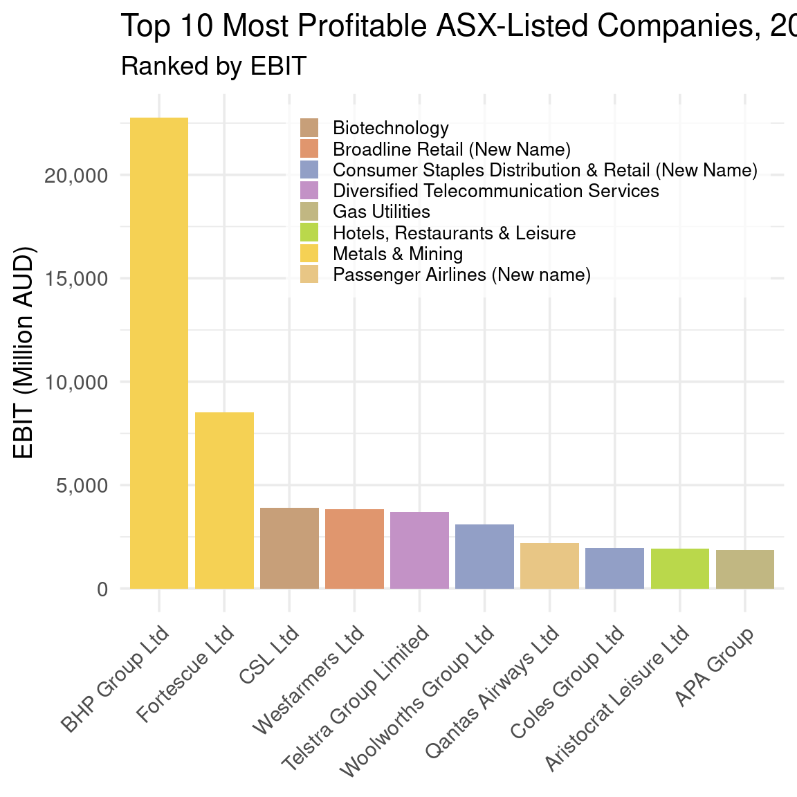
Third, we showed that the typical large Australian public company in 2024 achieved returns for investors of approximately 10%, and that the vast majority of large Australian public companies in 2024 achieved returns of between 0-15%. In our sample, the companies with the highest profitability produced returns of approximately 40%, while the companies with the worst profitability produced returns of approximately -20%.
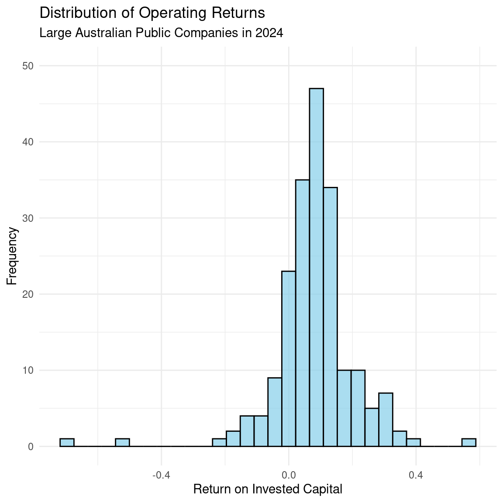
Fourth, we showed that while mining companies are subject to greater operating risk than firms in other industries, they do not appear to produce returns commensurate with this level of risk. In fact, if anything, the plot as a whole suggests an inverted relationship between expected returns and risk-i.e., those industries such as Construction & Engineering that produce the best returns on average also produce returns that are less dispersed.
3 min
Use the patchwork package to combine Figure 5.3, Figure 5.5, and Figure 5.6 into a single figure that shows all three plots. Do so such that the bar plot is on top, the histogram is on the bottom left, and the box plot is on the right.
Solution
# Combine the plots into patchwork
(bar_plot) / #bar_plot on top
(histogram | box_plot) # histogram on bottom left, box plot on right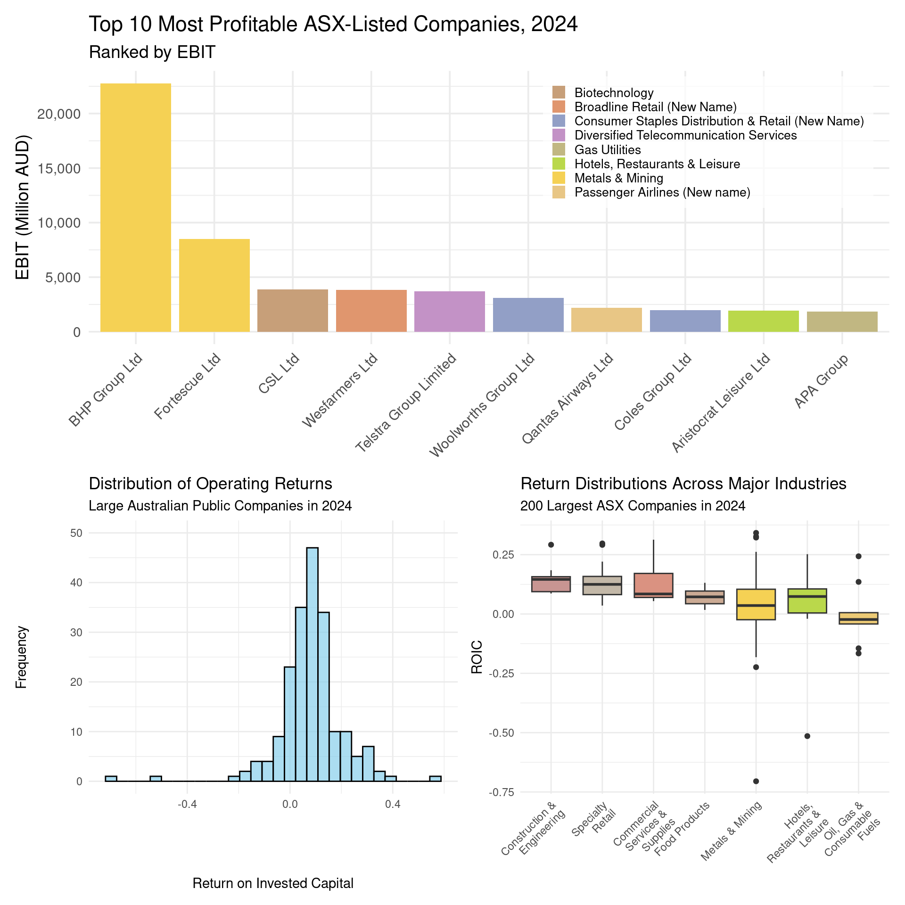
5.6 Conclusion
In this chapter, we have explored how to use the dplyr package to manipulate financial data in R. We have learned how to filter, arrange, mutate, select, group, and summarize data to extract meaningful insights from financial statements. By applying these techniques to the 200 largest Australian public companies in 2024, we have gained a deeper understanding of the level and composition of firm profits and investor returns in the Australian economy. We have also built on last chapter’s material and seen how to visualize these insights using histograms and box plots, which can help us better understand the distribution of returns across industries and firms.
In the next chapter, we will we will explore how to use tidyr and dplyr to reshape and combine financial data in R. We will learn how to pivot data between wide and long formats, and how to join data frames using keys to integrate information from multiple sources. By applying these techniques to the 200 largest Australian public companies in 2024, we will merge financial statements with industry classifications and market performance data, creating richer datasets for analysis. Building on the previous chapter’s work, we will also see how these reshaped datasets can serve as the foundation for deeper comparisons across industries and firms, enabling more flexible and targeted visualizations.